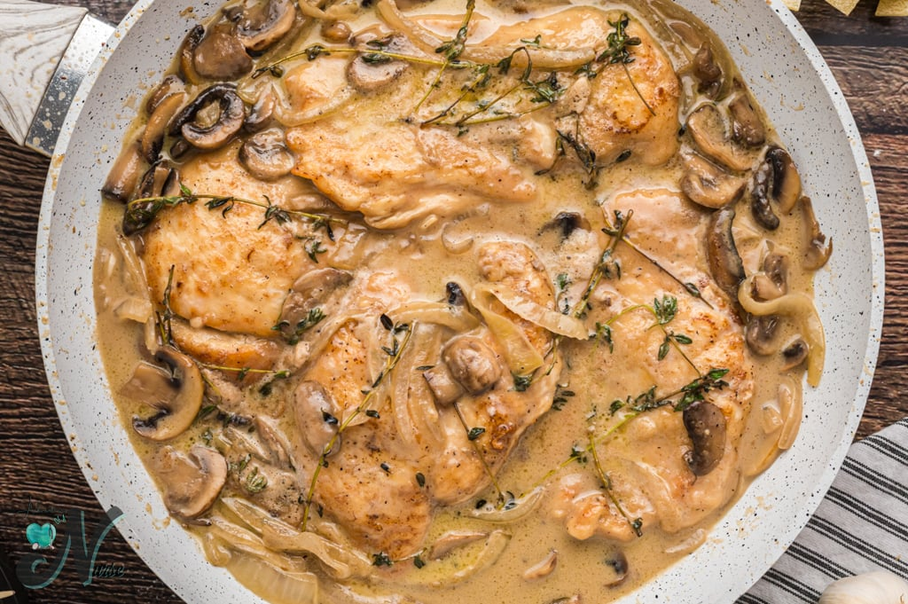

Chicken Marsala Recipe
Description
Chicken Marsal is an Italian-American dish of golden pan-fried chicken cutlets and mushrooms in a rich Marsala wine sauce
Ingredients
- 1 and half pound of boneless chickn breast
- 3 tablesppons all-purpose flour
- Salt
- Freshly ground black pepper
- 1 tablespoon olive oil
3 saltec unsalted butter, divided
- 1 (8-oz) package pre-slice bella or button mushrooms
- 3 tablesppons finely chopped shallots, from 1 meduim shallot
- 2 gloves garlic, minced
- 2/3 cup chicken broth
- 2/3 dry Marsala wine
- cup heavy cream
- 2 teaspoons chopped frersh thyme
- 2 taplespoons chopped fresh Italian parsely, for serving
Instructions
- Place the flour, 3/4 teaspoon salt and 1/4 teaspoon pepper in ziplock bag.
- Add the chicken to the bag; seal bag tightly and shake to coat chicken evenly.Set aside.
- Heat the oil and add 2 tablespoons of the butter in large skillt over medium-high heat.
- Place the flour-dusted chicken in the pan, shaking off any excess first, and cook,turning once, until the chicken is golden.5-6 min total.
- Transfer the chicken to a plate and set aside.
- Melt the remaining tablespoon of butter in the pan.
- Add the mushroom and cook,stirring frequently, until the mushrooms begin to brown, 3 to 4 minutes.
- Add the shallots, garlic, and 1/4 teaspoon of salt;cook for 1 to 2 minutes more.
- Add the broth, Marsala,heavy cream, thyme,1/4 teaspoon salt, and 1/8 teaspoon of pepper;use a wooden spoon to scrape any brown bits from pan to liquid
- Bring liquid to boil, then reduce the heat to medium and gently boil, until sauce is reduced by half,thickened, and darkned in color, 10 to 15 min
- Add the chicken back to pan, reduced the heat to low and simmer until chicken is warmed. 2 to 3 min. Sprinkle with parsely, and serve.
